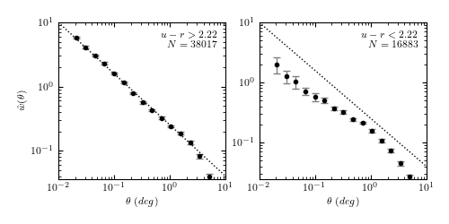

6. Two-point Correlation Functions¶
The N-point correlation function is a common technique used in astronomy to extract useful information from multi-dimensional datasets. This is especially true for spatial distributions of galaxies, because the theoretical description of the process of galaxy formation directly predicts the two-point correlation function.
The computation of the two-point correlation is a generalized N-body problem similar to Nearest Neighbor searches and Kernel Density estimation (see Unsupervised Learning: Density Estimation)
AstroML implements a fast correlation function estimator based on the scikit-learn BallTree and KDTree data structures. Here is an example of computing the correlation function (with bootstrap estimates) over the SDSS spectroscopic galaxies within the redshift range 0.08 < z < 0.12:
The correlation function interface is very straightforward. We’ll construct some random data in two dimensions and compute the two-point correlation here:
>>> from astroML.correlation import two_point
>>> np.random.seed(0)
>>> X = np.random.random((5000, 2))
>>> bins = np.linspace(0, 1, 20)
>>> corr = two_point(X, bins)
>>> np.allclose(corr, 0, atol=0.02)
True
For uniformly-distributed data, the correlation function is zero (that is, there is no excess over a uniformly-distributed background). If we wish to find the error on the result, this can be done via a bootstrap approach:
>>> from astroML.correlation import bootstrap_two_point
>>> corr, dcorr = bootstrap_two_point(X, bins, Nbootstrap=5)
>>> np.allclose(corr, 0, atol=2 * dcorr)
True
These are contrived examples, but they show how easy the computation can be. For a more realistic example, see the source code associated with the above figure.